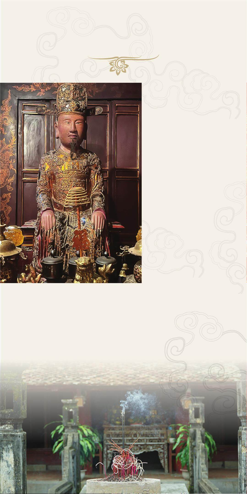

Thân thế và sự nghiệp
vua Lê Long Đĩnh.
V
ua tên húy Chí
Trung sinh năm
985, con thứ 5
của vua Lê Đại Hành.
Sau khi vua cha băng,
Long Đĩnh lên nối ngôi.
Lên ngôi vua, Lê Long
Đĩnh chấn chỉnh lại
triều đình, đặt quan hệ
với nhà Tống và đem
quân đi trấn áp các
cuộc nổi dậy của mán
Cử Long (nay là Cẩm
Thủy, Thanh Hóa) và
những vùng xa.
Về ngoại giao, năm
1007, Long Đĩnh sai
sứ là Minh Sưởng và
chưởng thư ký là Hoàng
Thành Nhã sang nhà Tống dâng biểu
xin Cửu kinh và kinh sách
Đại Tạng. Nhà Tống ưng thuận. Long Đĩnh còn cho người sang
mua bán, trao đổi hàng hóa với người Tống ở Liêm Châu và trấn
Như Hồng.
Năm 1009, vua băng hà, hưởng thọ 24 tuổi.
Triều Tiền Lê kết thúc, triều thần đã suy tôn Điện tiền đô chỉ huy
sứ Lý Công Uẩn lên ngôi Hoàng đế, lập nên vương triều Lý.
Năm 1010, để phát triển đất nước, nhà Lý dời đô từ Hoa Lư đến
Thăng Long.